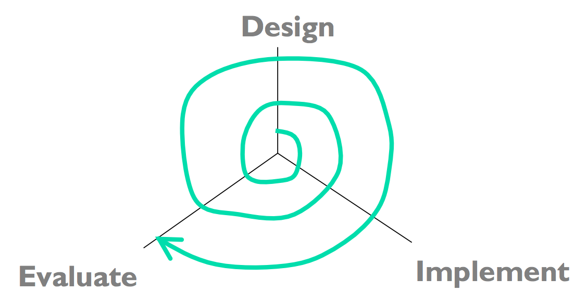

Use [Hypothesis](https://hypothes.is/) for discussion, Q&A, and additional examples or references to improve the material.
Case Study: IDEO Shopping Cart
Example: IDEO Shopping Cart
[Watch this video about the design firm IDEO's process (22 minutes)](https://www.youtube.com/watch?v=2Dtrkrz0yoU).
Where do they collect information from users and observation? What problems and goals do they discover from their observation?
Answer this question: [IDEO Shopping Cart]()
Idea Generation
Generating Ideas
- Generate ideas individually first
- Then come together as a group and brainstorm
- Write down everything on a board
After you collect information about the users and their goals, you'll have to identify a key **problem** that you're going to solve by building new software. Sometimes the problem will jump out at you; if so great. If not, you'll need to generate some ideas for problems to solve. That means reading and thinking about all the information you've collected, and then doing some idea generation. These slides talk about the **idea generation** process. You'll find this useful not just at this stage, but also for the next step in your project, when you'll have to generate ideas for solutions to the problem you've identified.
Note that **group brainstorming by itself is not the best approach**. It's been shown that you'll generate more ideas if you and your teammates first think about it privately, write down your individual ideas, then come together as a group to synthesize and build on each other's ideas. At top design firms like IDEO, if you don't bring in at least 5 ideas to every ideation meeting, then you won't last long as a designer.
IDEO's Rules for Brainstorming
- Be visual
- Defer judgment
- Encourage wild ideas
- Build on the ideas of others
- Go for quantity
- One conversation at a time
- Stay focused on the topic
IDEO has developed a list of rules for good brainstorming as a group. Read more about them [here](http://www.openideo.com/fieldnotes/openideo-team-notes/seven-tips-on-better-brainstorming).
Keep Multiple Alternatives Around


Don't fixate on one approach too early. Instead, keeping multiple alternatives on the table helps with all parts of the user-centered design process - design, implementation, and evaluation. Human beings need multiple alternatives to be creative and give good feedback. Here's some evidence.
* For individual designers: designers produce designs that are more creative and divergent when they keep multiple designs around throughout the iterative process. They also feel more confident about their designs, and the resulting final design is objectively better. (Dow et al, "Parallel Prototyping Leads to Better Design Results, More Divergence, and Increased Self-Efficacy", TOCHI, 2010).
* For groups: when you're sharing ideas with a group, sharing multiple ideas is better than sharing your single favorite. The group is more likely to integrate parts of multiple ideas together, the group explore more of the design space, and others in the group provide more productive critiques. (Dow et al., "Prototyping Dynamics: Sharing Multiple Designs Improves Exploration, Group Rapport, and Results," CHI 2011).
* For users: users give more constructive critiques when they're asked to use multiple alternative prototypes. (Tohidi et al, "Getting the Right Design and the Design Right: Testing Many Is Better Than One." CHI 2006.)
Two reasons why multiple alternatives help. First, humans are better at comparing things than they are at judging the absolute value of one thing in isolation. Second, presenting only one idea puts a lot of emotional weight on it, so the idea's presenter feels obliged to defend it, and others feel reluctant to criticize it.
Answer this question: []()